A car magazine you read by scrolling, where the car stands in front of every word.
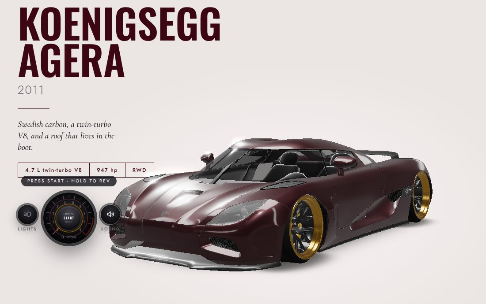
Big type, one real object in front of it.
I wanted portfolio pages that feel like holding something. Giant type with one object standing in front of it, and the object is a real 3D model you can turn, not a render pasted onto the page.
Cars were the obvious subject. I already had a collection of them from my estate project, each one restyled with its own paint and wheels. They needed a stage that showed them off properly.
Five cars, and one rule about colour.
The rule: no white, grey, silver or black paint. Those look dull on screen. Every car got a rich colour that holds its own against its accents, so there's no brass on a car that already has gold details. I tried a Ferrari 458 first and dropped it. The purple 812 was the Ferrari.
Each car gets an issue, and each issue reads like a feature.
The layouts come from tuning-magazine pages: condensed headlines, thin geometric labels, serif italics for the voice, and light paper spreads alternating with dark studio spreads. Every issue runs the same six spreads, so the car is the only thing that changes.
The car overlaps its headline like a cover shoot.
The 3D canvas sits above the text and lets every click pass through it, so the car can stand in front of a headline while the page still works underneath. Each spread holds a camera stop: angle, distance, framing, how much light. Scrolling glides the camera from one stop to the next, and the car holds its pose for a moment at each one, so it never drifts while you read.
The opening frame of every spread was checked on a laptop and a phone, because a car that frames well at 16:9 can bury the text at 9:19.
The hardest part, and the most fun.
Rims are the highlight of these builds, so any of four forged rims fits on any car, in six finishes. The catch is that every model builds its wheels differently. One car has a mesh per tyre, another one mesh for a whole axle, another carries its tyre lettering as a separate ring.
So each car's tyres are measured when it loads. For every wheel the page finds its axle, its true centre, its width, and the inner radius where a rim's bead seats. Parts modelled once for a whole axle get cut into one piece per wheel. A new rim is then scaled to sit exactly on that bead.
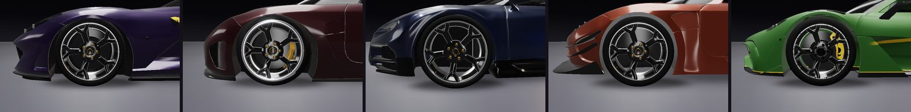
The test I trust most: turn every wheel 70 degrees and look again. If a tyre wobbles or a nut drifts away from its spoke, a centre is wrong.
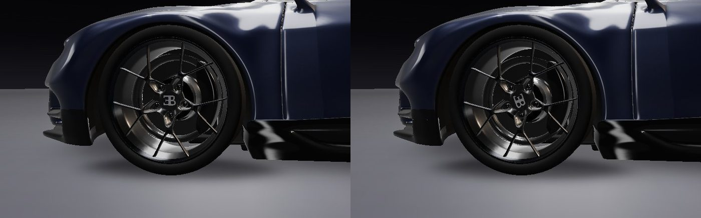
Lamps should behave like light, not like stickers.
The lamps are light sources bright enough to bloom. Tail lamps glow softly at rest and burn when the lights come on, headlamps strike with a short flicker the way LEDs do, and each car's own lamp parts carry the light. The glow had to keep the page behind the car visible, so the bloom keeps the canvas transparent everywhere it isn't lit.
An early version added round projector lenses to three of the cars. They sat flat on curved lamps like coins, so they went.
No recordings. Each engine is built from how it's made.
The first versions all sounded alike, so I rebuilt them from the engines themselves. A four-stroke fires each cylinder once every two turns, so the note follows the revs and the cylinder count:
firing frequency = rpm × cylinders ÷ 120
On top of that note: each engine's own harmonics, the beat between cylinder banks (a V8's lope, a W16's rumble), rasp, the resonance of its exhaust, a rev limiter, and for the turbo cars a whistle, rushing air, and a flutter or a whoosh when you lift off. The Project One adds its electric whine. Each car also got a named exhaust of its own.
| Car | Exhaust | At the redline | Character |
|---|---|---|---|
| Ferrari 812 Superfast | Canto | V12 · 8,900 rpm · 890 Hz | A clean shriek to the limiter |
| Koenigsegg Agera | Ghost | V8 · 7,250 rpm · 483 Hz | Flat-plane rasp, wastegates chatter on lift |
| Bugatti Chiron | Molsheim | W16 · 6,700 rpm · 893 Hz | Deep and layered, four turbos rushing |
| Koenigsegg One:1 | Megawatt | V8 · 8,250 rpm · 550 Hz | The angriest, the loudest crackle |
| Mercedes-AMG Project One | Brixworth | V6 · 11,000 rpm · 550 Hz | Formula One buzz under an electric whine |
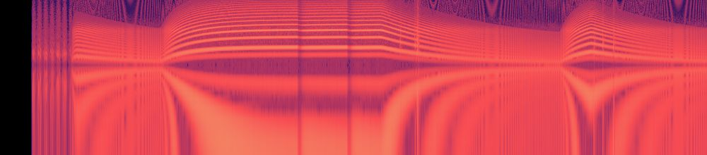
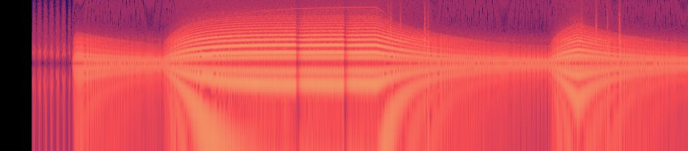
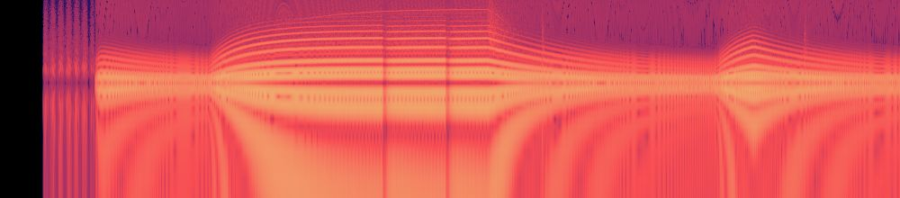
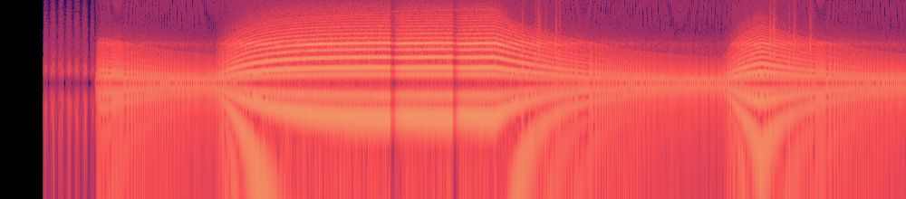
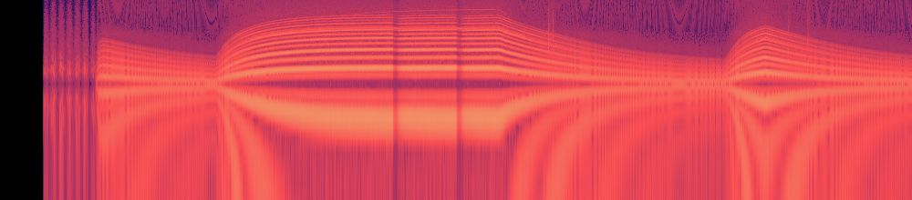
All five cars on one page, to play with.
The garage loads one car at a time. Each one stands in front of its name in brushed metal, with outline echoes stepping back into the dark that slide against each other as the view turns.
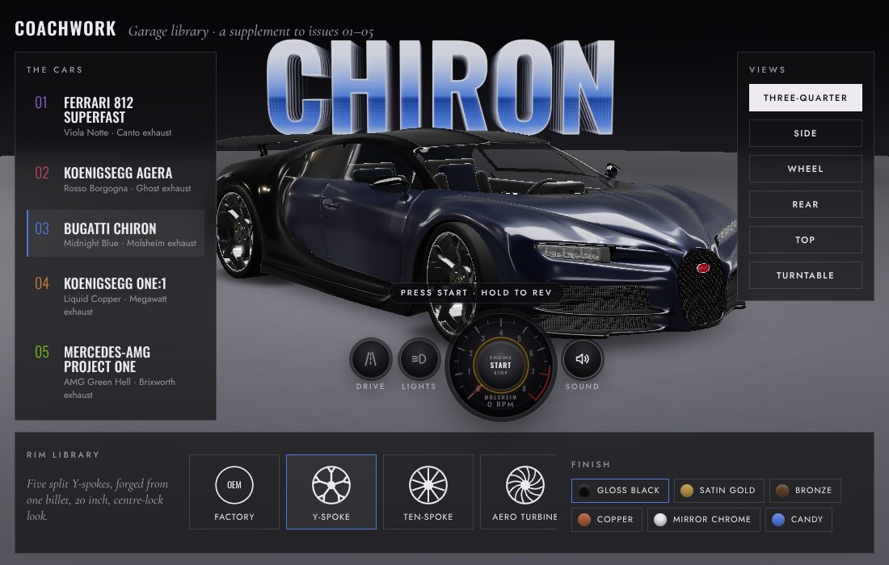
Changing rims is a small show. A portal opens on the floor, the car rises on its jacks with its wheels hanging, the rims change in a flash, and it drops back onto its springs and settles. The body rides on springs over the wheels everywhere. It rocks when the engine catches and squats when it pulls.
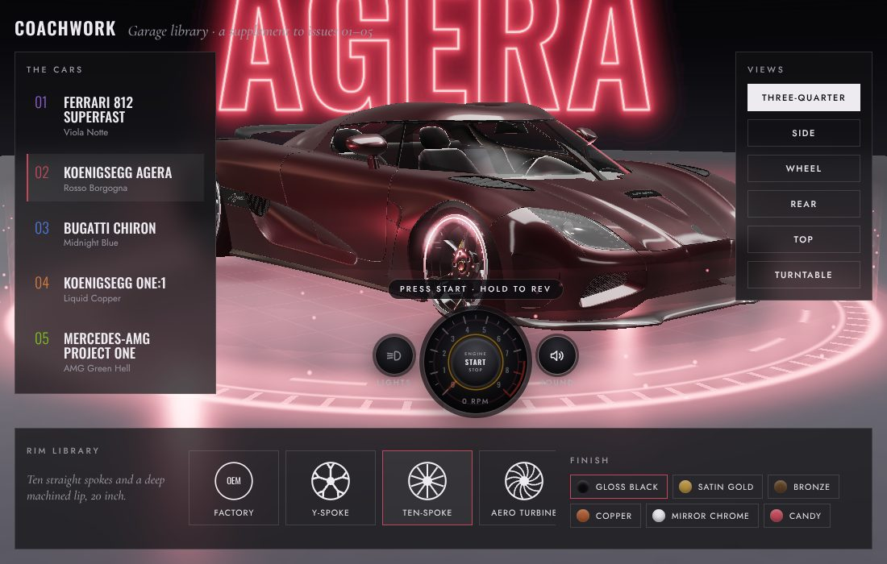
Drive puts the car on a rolling road inside the portal. Tap for gas, shift with the paddles, and hold the brake. There are seven gears worked out from each car's redline and top speed. An upshift cuts the power for a moment, so the car jerks and then surges as it bites. A downshift blips, and it's refused if it would over-rev. The asphalt streaks past, the wheels blur, leaves blow round the car and curl into its wake, and hard braking from speed makes the discs glow.
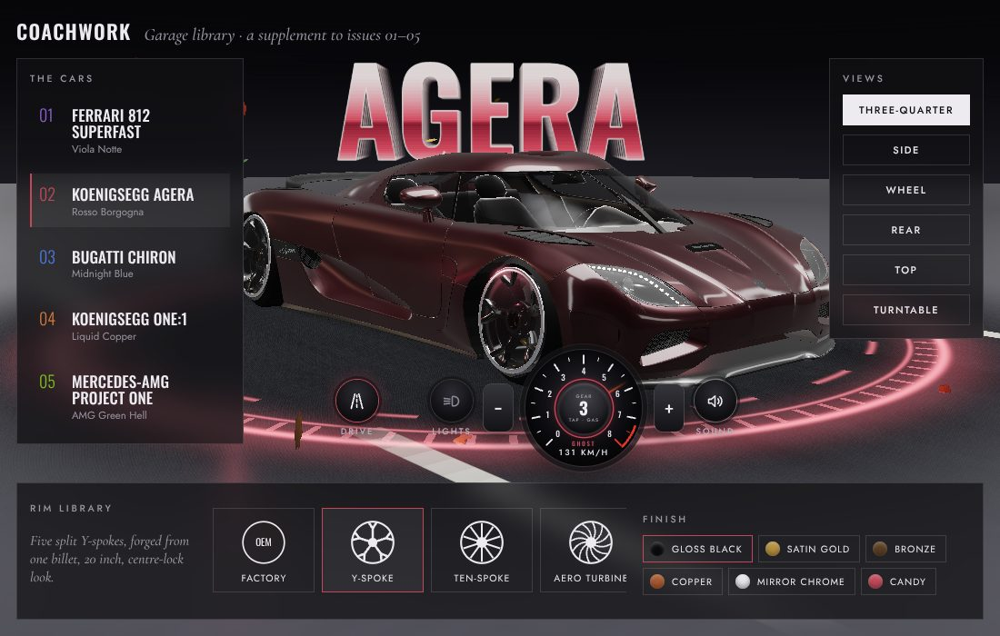
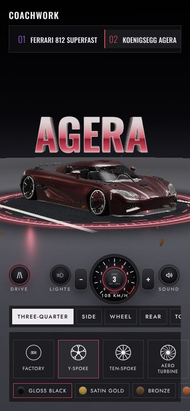
Every fix taught me something about the models.
It stood 13 cm above the floor. Its parts are rotated inside the file, and a rotated part's bounding box comes out far bigger than the part. The page now measures the real vertices.
A very bright reflection overflowed the frame buffer, and the bloom spread the bad pixels into blocks. The values are now cleaned and capped before the bloom.
The 812 keeps its tyre lettering as a separate ring, so it looked like a car with eight wheels. Parts are now pooled per wheel before anything is measured.
The Agera's wheel centre came from the average of its vertices, 2 cm off, so the wheel turned off-centre. The centre now comes from the tyre's outline.
The Chiron's rims and nuts were modelled once per axle and stayed put while the tyres turned. They're now cut per wheel.
The portal's light curtain wrapped round the camera in a wheel close-up and tinted the whole screen. It now hides when the camera is that close.
On the live site every issue waited forever for a car file that wasn't there. The files went in, and a missing car now says so.